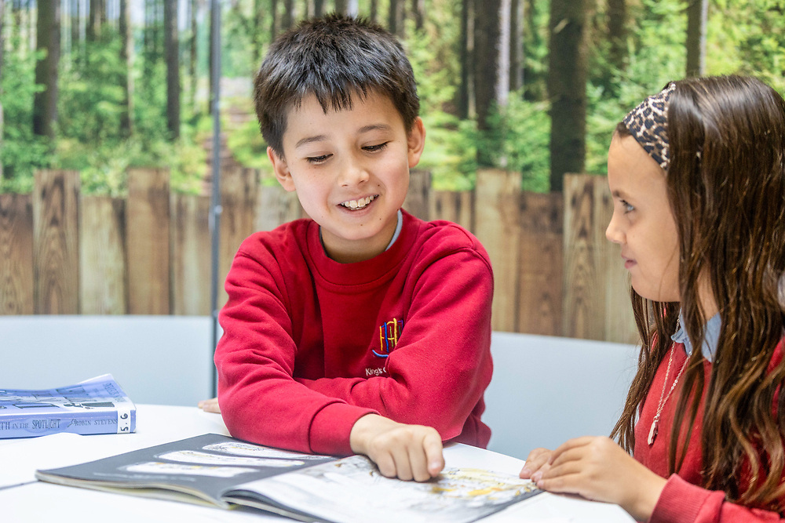
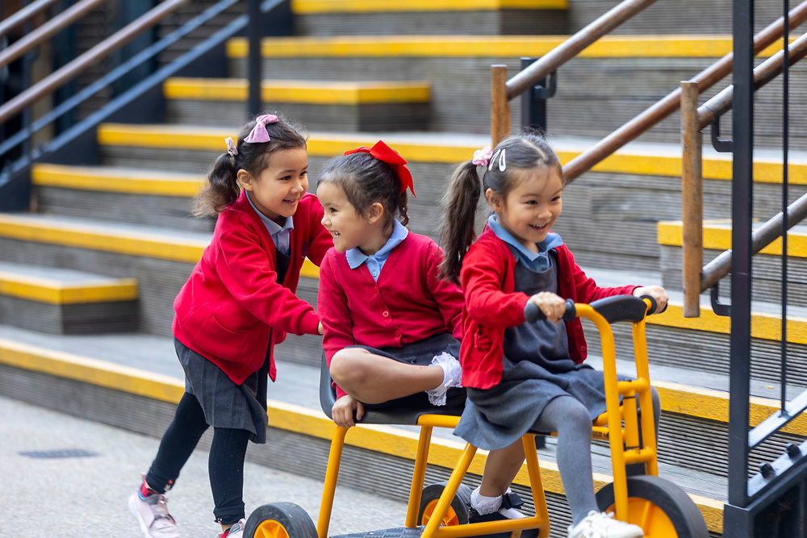
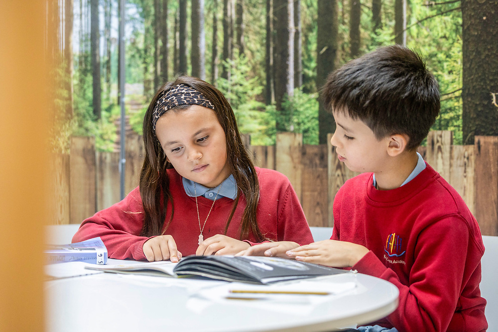
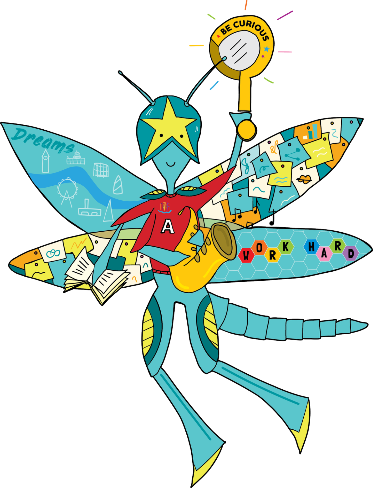
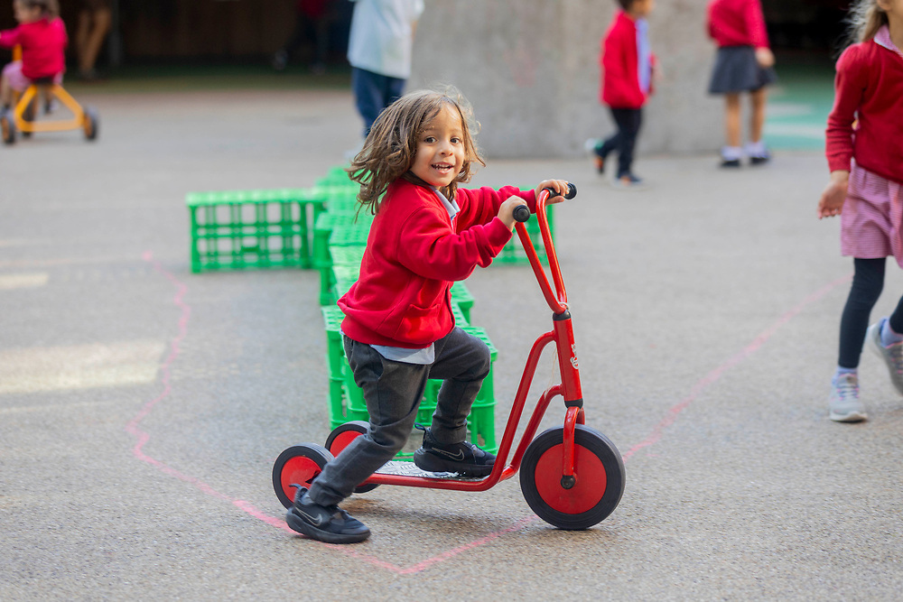
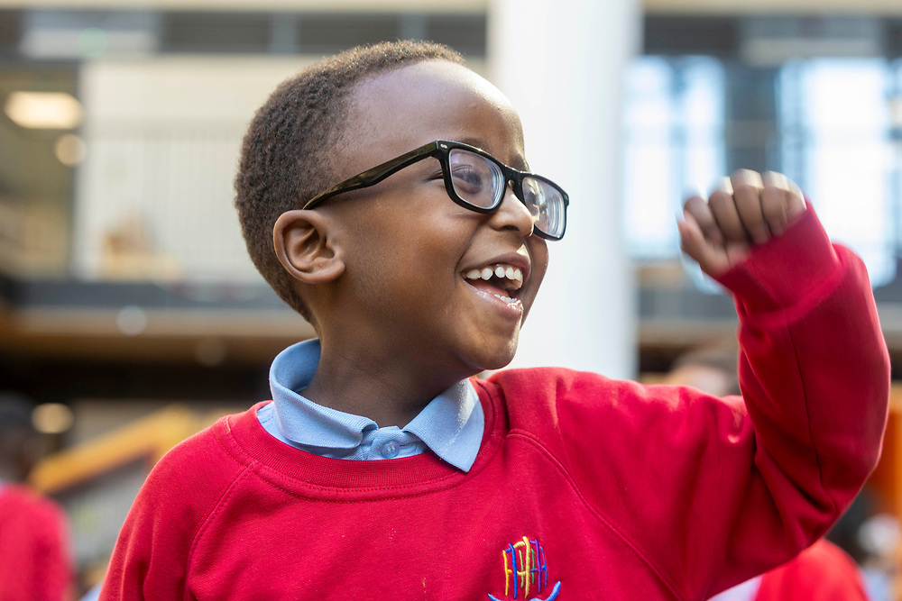
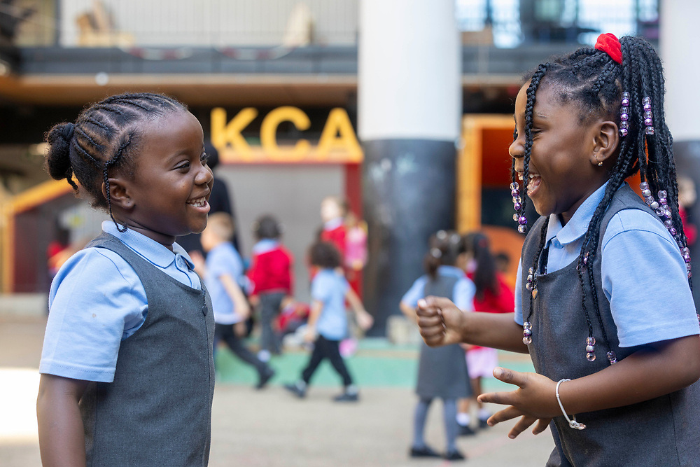
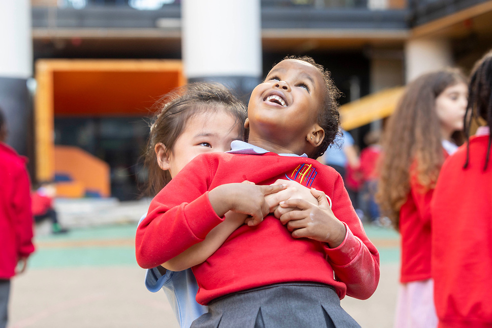

Courage
Be brave. Embrace challenge.

A vibrant, inclusive nursery and primary school in the heart of one of London's most exciting communities.
At King's Cross Academy, education develops both knowledge and character. We want every child to find their voice, discover their strengths and leave us ready to thrive.
Read the Headteacher's welcome →
Our diversity is one of our greatest strengths. Children learn alongside one another in a community built on relationships, inclusion and respect.
Sharing our campus with Frank Barnes School for Deaf Children creates a distinctive community and gives pupils opportunities to encounter British Sign Language as part of school life.
 Explore inclusion at KCA →
Explore inclusion at KCA →
Our broad and ambitious curriculum builds secure knowledge while encouraging children to question, think critically, collaborate and communicate with confidence.
Learning begins with curiosity and leads towards purposeful outcomes — helping children see connections between subjects, ideas and the world around them.
 Go deeperExplore our interactive curriculumNursery to Year 6 →
Go deeperExplore our interactive curriculumNursery to Year 6 →Our values don't live on a poster. They shape learning, relationships, choices and the people we want our children to become.
Be brave. Embrace challenge.
Listen. Value others. Belong.

Care, share and lend a hand.

Do the right thing.
Practise. Persevere. Grow.

Be curious. Dream big.
Primary school should open doors. At KCA, children perform, create, play, lead, explore and discover new possibilities.



Our location isn't simply our address. It changes what children can experience.
Relationships with organisations across science, technology, arts and culture broaden horizons and bring learning to life — from Central Saint Martins and the Francis Crick Institute to Google UK and our many local partners.
Every child. Every opportunity.We respond to children's different needs, remove barriers to learning and remain ambitious for every pupil. Inclusion isn't an additional programme at KCA — it is part of how we teach, play and learn together.

We are proud of what our pupils achieve and equally committed to continually getting better. Our interactive outcomes site brings together the latest statutory results, trends and priorities.
See the evidencePerformance & OutcomesExplore our latest data →We are ambitious about what comes next. Hear directly from our Headteacher about the priorities guiding the next stage of King's Cross Academy's development.
The strongest story about a school is told by the people who experience it. This space will bring together parent voice, pupil voice and independent external reports.
Parent voice“I love the ethos of KCA, they really put my child at the centre of everything they do.”KCA Parent
External reportIndependent evidence will live here.Ofsted, Inclusion Quality Mark and other external recognition.
Pupil voiceIn their own words.A space for the children to tell prospective families what KCA feels like.

The best way to understand King's Cross Academy is to experience it.